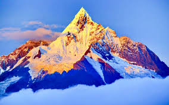
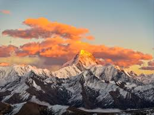
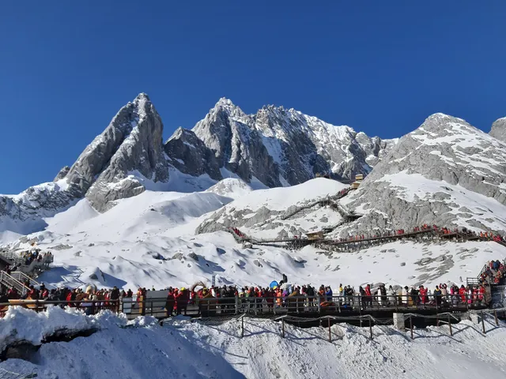

雪山摄影精选
每一幅作品都记录了雪山不同时刻的壮美，从晨光微熹到星河漫天，从巍峨主峰到山间细雪。
梅里雪山 · 日照金山

拍摄于云南德钦，清晨的第一缕阳光洒在卡瓦博格峰上，整座雪山被镀上一层金辉，是藏区最神圣的自然景观之一。拍摄时间：2024年1月，海拔3400米。
贡嘎雪山 · 星河之下

拍摄于四川子梅垭口，深夜的贡嘎主峰在星河的映衬下更显巍峨，星空与雪山交织出极致的静谧与辽阔。拍摄时间：2023年10月，使用广角镜头长曝光拍摄。
冈仁波齐 · 雪域圣山

拍摄于西藏阿里地区，冈仁波齐作为藏传佛教的神山，终年积雪覆盖，山体的纹路如天然的雕刻，展现出独有的庄严与神圣。拍摄时间：2023年8月。
玉龙雪山 · 云绕山腰

拍摄于云南丽江，夏季的玉龙雪山少了几分凛冽，云雾缠绕在山腰，与山下的蓝月谷相映成趣，刚柔并济的美展现得淋漓尽致。拍摄时间：2024年6月。